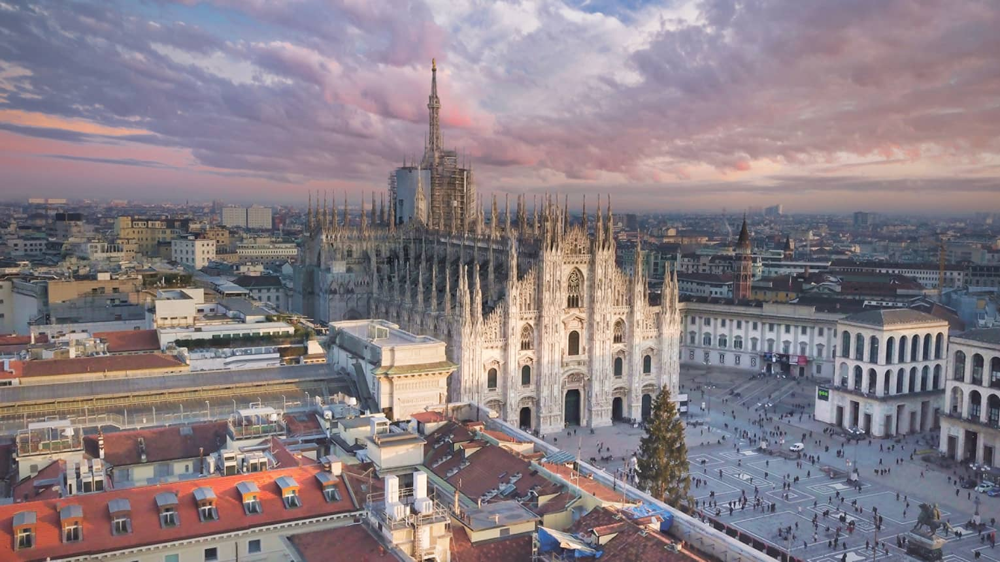
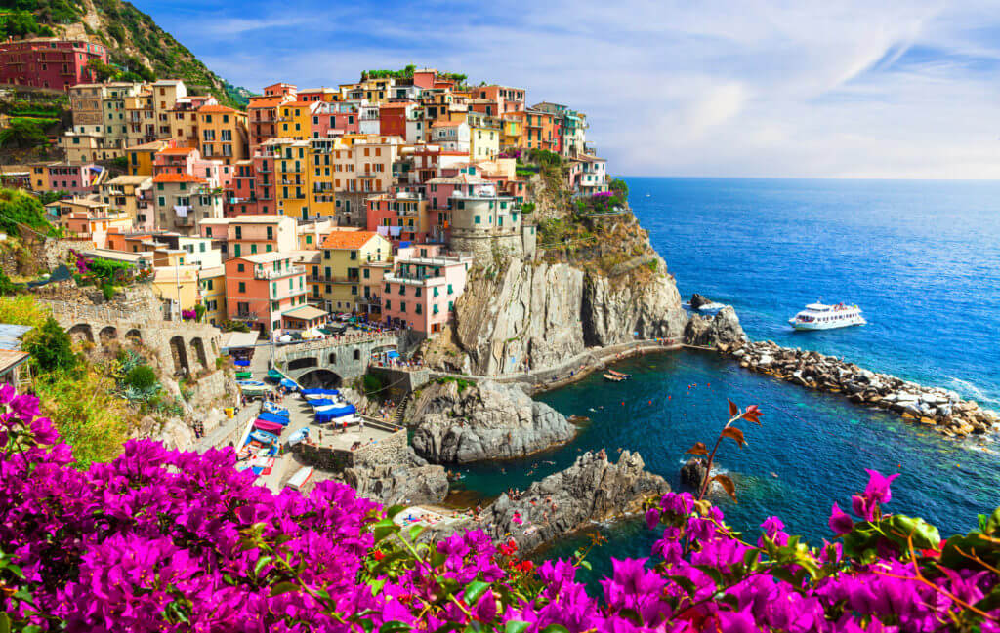
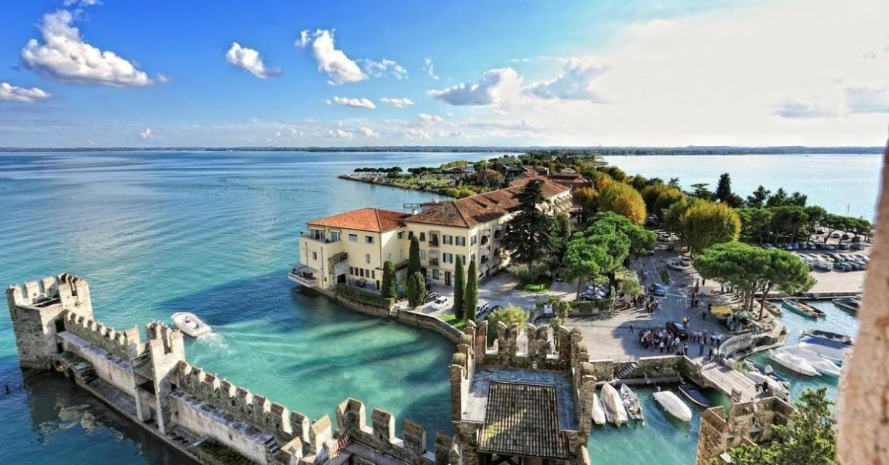
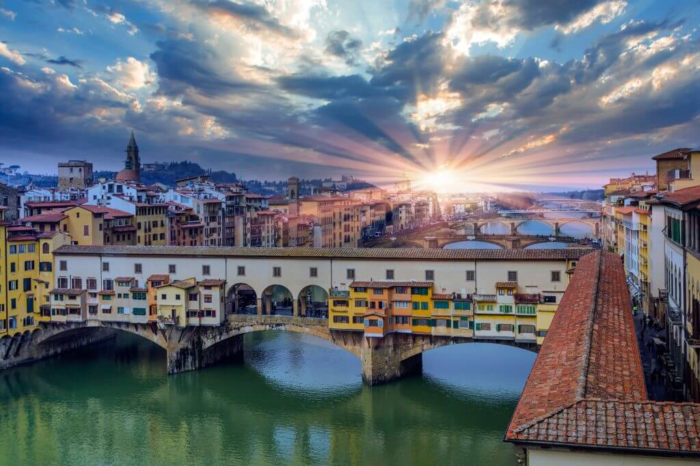

Італія
Іта́лія, Італі́йська Респу́бліка — держава на півдні Європи, у Середземномор'ї. Займає Апеннінський півострів, Паданську рівнину, південні схили Альп, острови Сицилія, Сардинія тощо. На суходолі Італія межує з Францією на північному заході, зі Швейцарією й Австрією на півночі та Словенією на північному сході. Входить до Євросоюзу і НАТО з моменту їх створення, є третьою за величиною економікою єврозони. На території Італії розташовані також такі державні утворення: Сан-Марино, Ватикан, Суверенний Мальтійський орден.
Рим

Рим - одна з найбільш відвідуваних столиць Європи. Місто, яке відображає історію
Стародавнього світу, де безліч знаменитих художників, архітекторів, скульпторів і
живописців. У Римі безліч пам'ятників архітектури таких як: Тріумфальна арка, Колізей,
Пантеон; безліч церков і палаців епохи Відродження. У Римському національному музеї
зібрано багато археологічних розкопок, також обов'язково необхідно відвідати Ватиканський
і Капітолійський музеї. Також Рим здивує Вас своєю різноманітністю від галасливих дорогих
ресторанів до затишних маленьких кафе.
Колізей. Побувати в Італії і її столиці, Римі і не побачити Колізей - це просто
нереально. Колізей - символ волі і влади Стародавнього світу, який ознайомить Вас з усією
загадкою і прагненням до волі і свободи. Стадіон - амфітеатр якому вже понад 2000 років!
Просто можна згадати фільм "Гладіатор", який передає всю жорстокість і велич цього
історичного місця.
Капітолій. Капітолійський музей, це місце в якому ви зможете поринути в історію,
адже це найстаріший публічний музей в світі! На площі перед музеєм знаходиться кінна
статуя Марка Аврелія, спроектована Мікеланджело, в самому музеї зберігаються історія
самого обгрунтування Риму - статуя Вовчиці з близнюками Ромулом і Ремом.
Пантеон. Пантеон - одне з архітектурних творів, яке також привертало до себе своєю
загадковістю багатьох художників і письменників. "Око Пантеону '' - одне з головних
особливостей Пантеону цей отвір, яке розташований по центру купола, діаметром 9 метрів,
через яке проходить, світло і сонячні промені.
Собор св.Петра. Собор св. Петра - це просто витвір мистецтва, до якого доклали
зусиль безліч великих архітекторів і живописців зі світовим ім'ям. Собор св. Петра це
дзеркало, в якому відображається вся історія і сутність, народу, який тут проживав. Він
є серцем Ватикану і всього католицького світу.
Мілан

Мілан - найсучасніше і багате місто Італії, де безліч магазинів ресторанів,
де кожен зможе знайти для себе щось цікаве, і поринуть у світ шопінгу. Саме в Мілані ви
зможете досліджувати, вивчати і пробувати на смак сучасну італійську життя. Так само тут
багато палаців, церков які здивують Вас своїм архітектурним шиком.
Музей Ламборджині. Всього в двох годинах їзди від Мілана знаходиться знаменитий музей
Ламборджині, відвідувачі цього музею зможуть оцінити цей жаданий автомобіль, так
само побачити його еволюцію в часі. Вхідний квиток коштує 13 євро - але це того варто.
Музей Феррарі. Кожен хоче себе відчути гонщиком Формули - 1, ви зможете
відчути цей екстрим, відвідавши музей Феррарі, всього година їзди від Мілана. У музеї
безліч експонатів і пам'яток, пов'язаних з гонкою на легендарних автомобілях. Працює
7 днів на тиждень без вихідних! Музей Фераррі закритий всього 2 рази в рік: 25 грудня
на день католицького Різдва і 1 січня (ну а хто ж після ночі веселощів і випитих
келихів просеко захоче виходити на роботу;).
Чінкве Терре
Чінкве Терре - національний парк, відноситься до самої чистої зони Середземномор'я. Здивує Вас незвичайною красою і незвичайними панорамами. Назва парку - означає, "П'ять земель" тому що складається з п'яти містечок, який не звичний для нашого сприйняття, ви зможете тут помилуватися незвичайними пейзажами і вдихнути бриз Середземноморського повітря. Місто, в якому панує романтика, любов, в якому хочеться любити і бути коханим. Звичайно ж, це Венеція, скільки закоханих пар можна зустріти тут, що в самому повітрі панує десь стріла Амура. Безліч молодят відправляються сюди в пошуках романтичних відчуттів. Тут кожна друга будівля може нести звання - історичної, не дивно адже вся стара частина міста внесена до Списку спадщини ЮНЕСКО.
Сірміоне

Довгий і вузький півострів - це і є містечко Сірміоне, здивує Вас своїм
виглядом, в місті знаходиться римська вілла, з відкритими терасами, критими галереями,
басейном і казковим видом на озеро.
Також Ви зможете відвідати озеро Гарда, невід'ємною частиною якого є яхти.
Живописне і найбільше озеро в Італії. Розташувалася ця краса біля підніжжя Альп і
улюблене місце для літньої відпустки у Італійців, німців і європейців. Українці поки
не знайомі з такими райськими куточками близько. Однак якщо Ви подорожуєте на машині,
обов'язково загляньте сюди на день і збагатіть свою відпустку ще одним незабутнім
спогадом! Відвідайте казкове містечко - СПА курорт Сірміоне. Від Мілана всього 2,5
години на автомобілі або 3,5 години поїздом з центрального вокзалу Мілана. А всього
в 20 хвилинах їзди від Сірміоне, Ви опинитеся в Вероні і зможете поглянути на балкончик
Джульєтти під яким співав діферамби Ромео!
Марсель

Собор Святої Марії, чий купол добре знайомий туристам по листівкам і фото в
путівниках, вже давно став візитною карткою Флоренції. Як і багато церкви і храми Італії,
Санта-Марія-дель-Фьоре — справжня скарбниця. Чудова архітектура будівлі не поступається
величчю і розкішшю внутрішнього оздоблення, як і художнім перлинам собору — полотен
«Оплакування Христа» Мікеланджело та «Марія Магдалина» Донателло. А з оглядового
майданчика на куполі собору відкривається чудовий вид на місто.
Понте Веккьо. Напевно, найвідоміший міст Флоренції, який також варто внести
у свій список обов'язкових місць, куди варто сходити у Флоренції. Міст перекинутий
через річку Арно і вечорами у світлі мерехтливих вогнів виглядає, ніби ожила казка.
Палаццо Медічі-Ріккарді. Колись резиденція могутнього сімейства Медічі,
сьогодні палац служить резиденцією Префектури міста і частково відкритий для відвідування.
Туристам напевно буде цікаво подивитися Капелу Волхвів, прикрашений фрескою Беноццо
Гоццолі, а також деякі апартаменти палацу.
Площа Синьорії. Як і будь-який куточок Флоренції, ця площа — живе втілення історії:
у давнину тут знаходився уряд Флорентійської Республіки (синьйорія), від якого вона й
отримала своє ім'я. Тут же вершити державні справи і виносили вироки. Сьогодні на
площу Синьорії приходять, щоб помилуватися прикрашають її прекрасними статуями:
копією «Давида» Мікеланджело, «Геркулесом» і «Юдифь» Донателло, і неодмінно кинути
монетку в фонтан «Нептун» — щоб повернутися сюди ще раз.
Корисні посилання
- Іспанія
- Франція
- Канада
- Австралія
- Бразилія
- Аргентина
- Італія
- Індія
- ПАР
- Індонезія